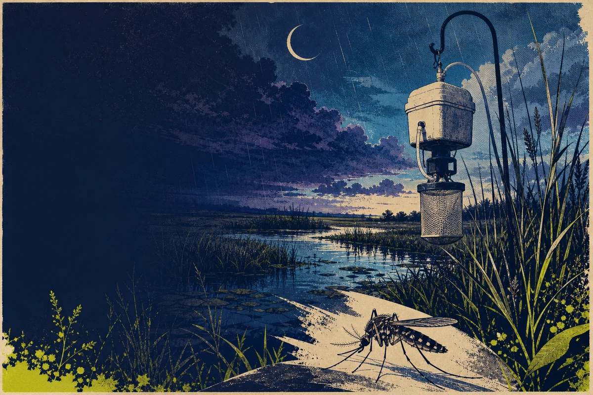

Keep the zeros
A valid interval with targetTaxaPresent = N is real effort and a real zero. A missed or unusable interval is unavailable, never zero.
Mosquitoes · CO₂ traps · release 2026
Follow mosquito activity through rainfall, warmth, and season—one NEON trap interval at a time.

The measurement before the pattern
NEON services CO₂ fan traps for separate nighttime and daytime intervals. The hardware is often called a “light trap,” but NEON deploys it without the bulb: carbon dioxide is the lure. This explorer keeps every valid sampled interval—including supported zero catches—before calculating activity.
A valid interval with targetTaxaPresent = N is real effort and a real zero. A missed or unusable interval is unavailable, never zero.
Large catches may be subsampled. Eligible counts are expanded continuously by 1 / proportionIdentified; invalid proportions are held, not guessed.
Mosquitoes per 24 trap-hours is a within-site activity index of trap encounter—not population size, density, infection, or human health risk.
Show when and where the standardized CO₂-trap catch changes, with species-level richness separated from coarser identifications.
Estimate mosquito populations, prove weather caused a pulse, or infer pathogen presence, transmission, exposure, or disease risk.